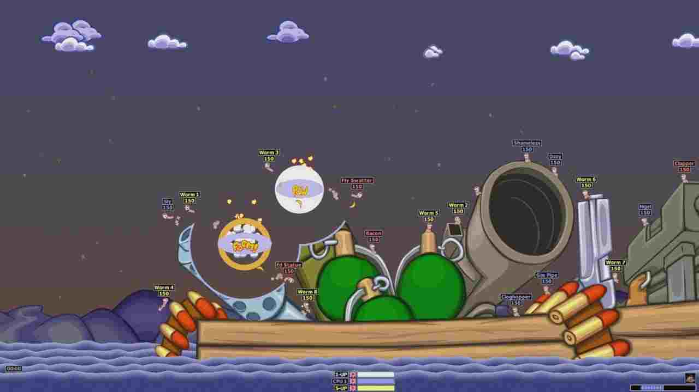
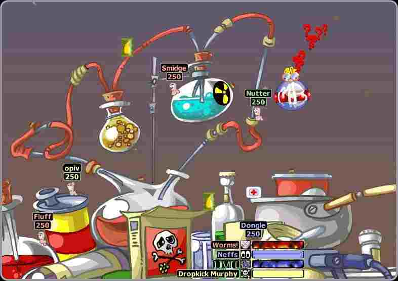
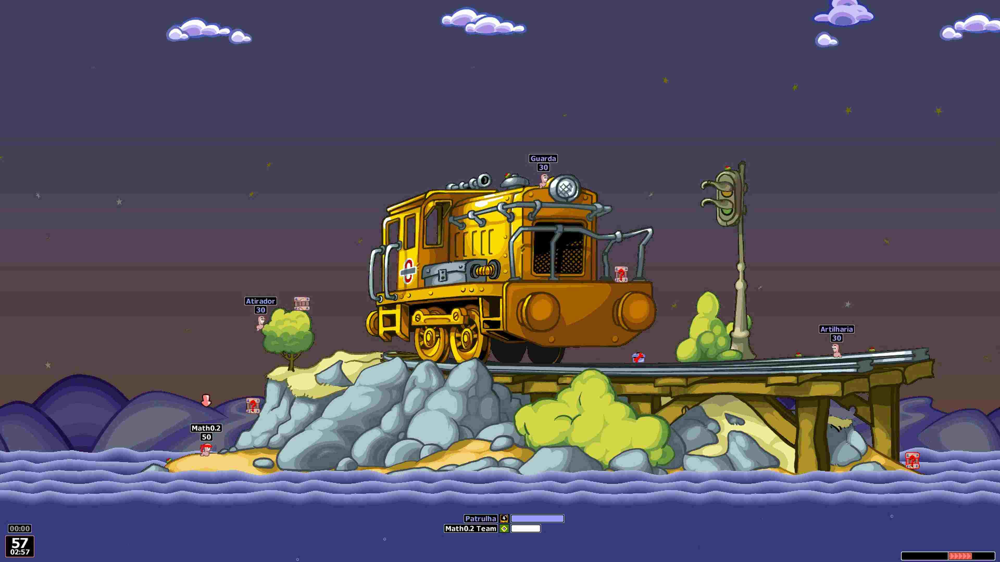
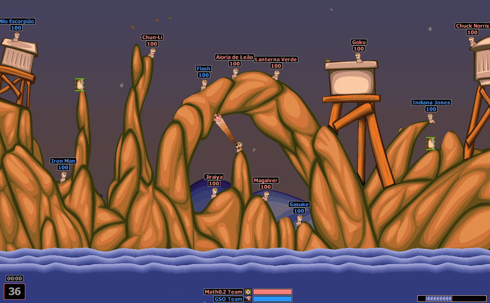
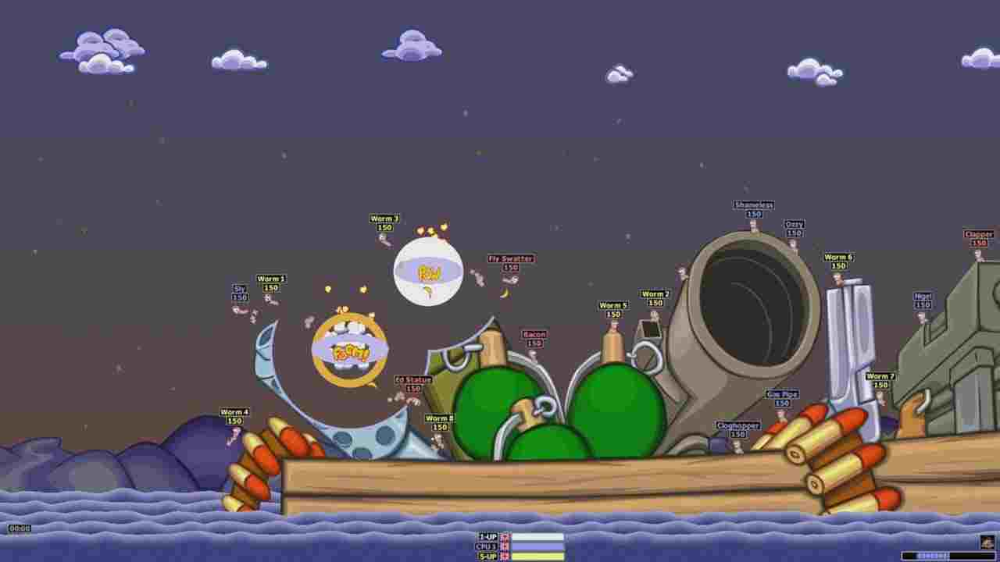
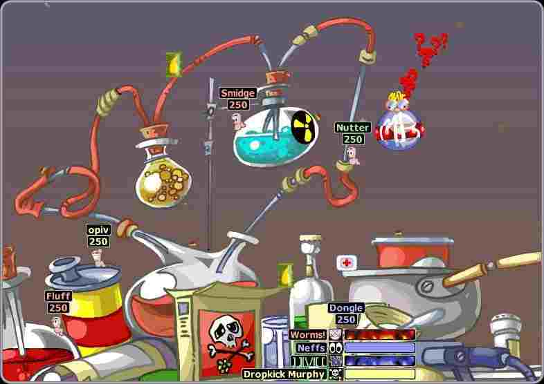
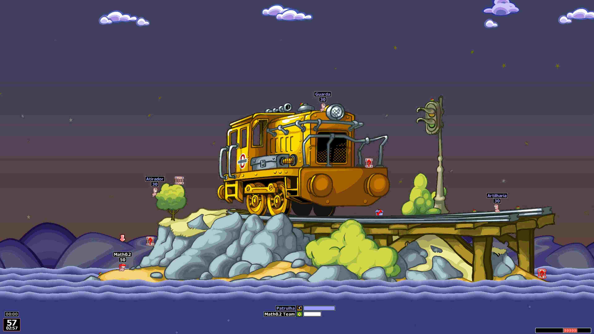
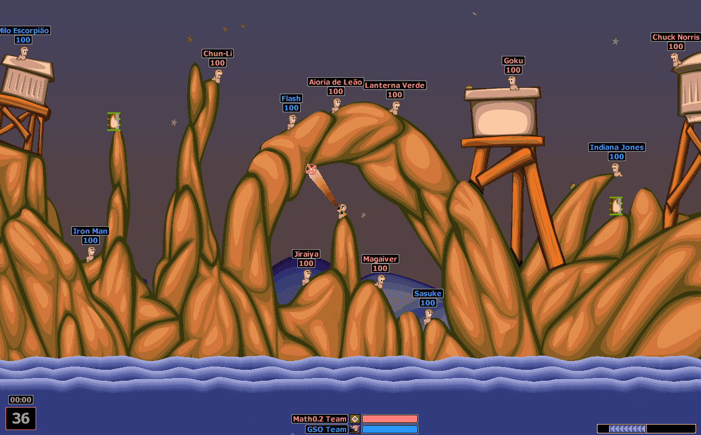
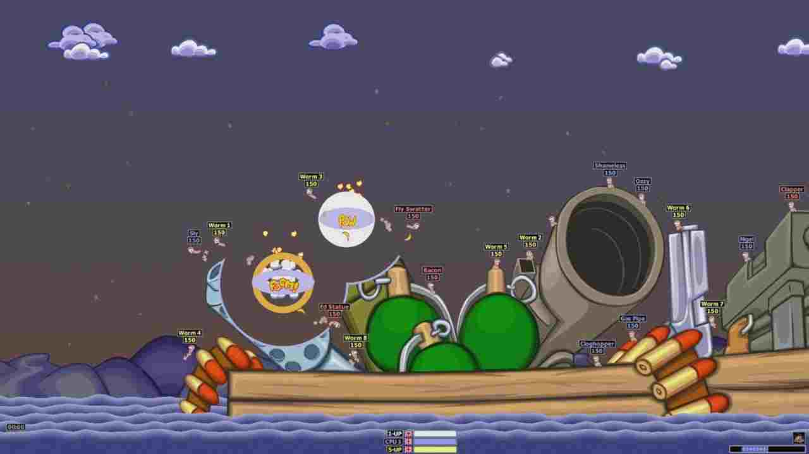
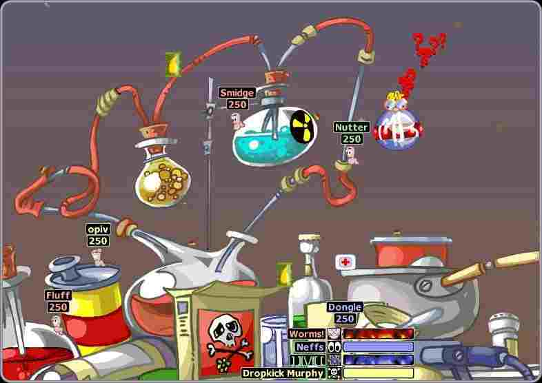
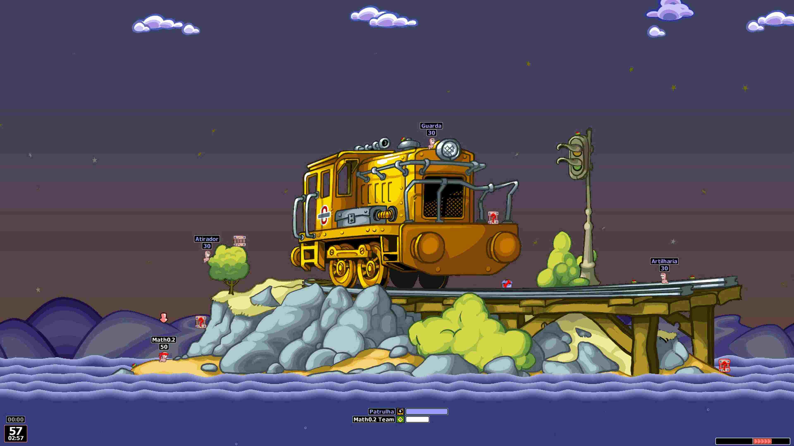
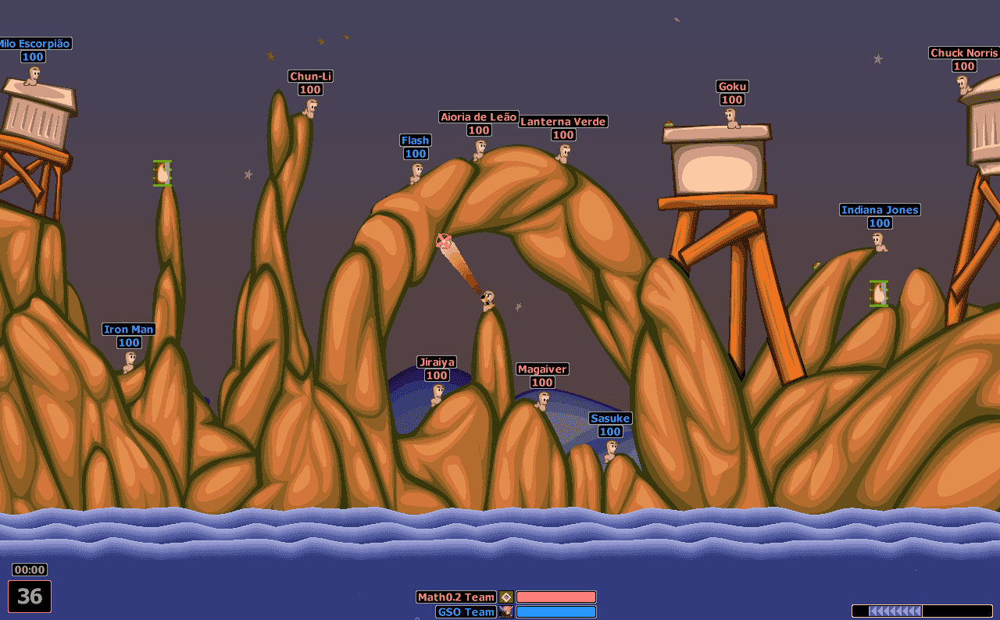
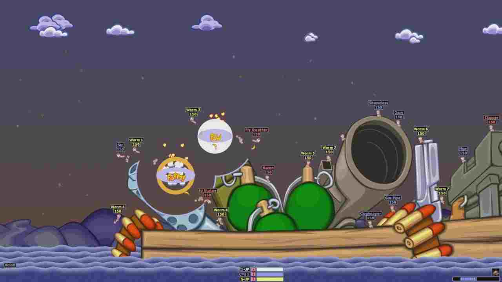
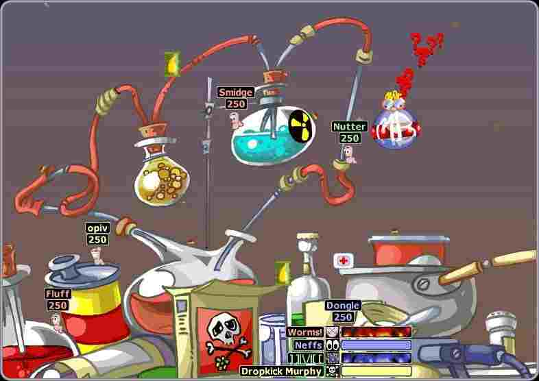
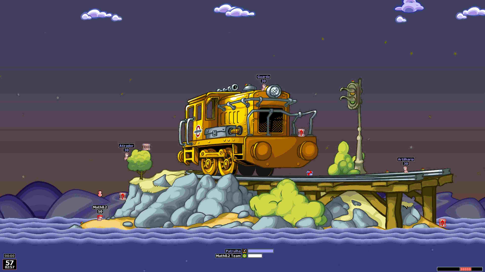
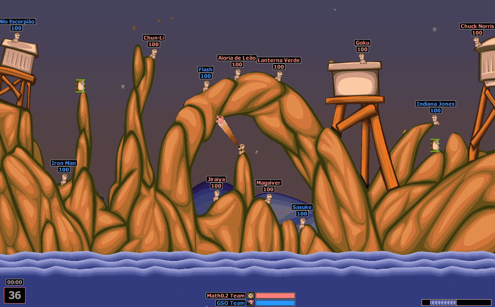
Worms Armageddon é um jogo de estratégia por turnos lançado em 1999, desenvolvido e publicado pela Team17. O jogo faz parte da famosa franquia Worms, conhecida pelo seu humorcartunesco e jogabilidade baseada em física.
Embora não seja o primeiro título da série, Worms Armageddon é amplamente considerado por fãs e críticos como o ápice da era clássica 2D da franquia, sendo até hoje jogado competitivamente e mantido ativo por comunidades e atualizações tardias.
A franquia Worms foi criada por Andy Davidson, um programador britânico autodidata. Em 1994, Davidson desenvolveu um protótipo de jogo chamado “Total Wormage”, inicialmente como um projeto pessoal para demonstrar suas habilidades técnicas.
Esse protótipo apresentava conceitos fundamentais que se manteriam na franquia como: personagens pequenos e frágeis, os ambientes destrutíveis, a física aplicada aos projéteis, o combate por turnos, o e humor exagerado e não violento graficamente
Davidson apresentou o projeto à Team17, que reconheceu imediatamente o potencial comercial e criativo da ideia. A empresa adquiriu os direitos do jogo, refinou o conceito e lançou o primeiro Worms oficialmente em 1995.
Worms Armageddon nasceu em 1999, com o objetivo claro de aperfeiçoar tudo o que funcionava nos jogos anteriores, sem romper com a identidade 2D clássica da franquia. Suas principais inspirações são: Refinar a experiência competitiva, tornar o jogo mais personalizável e possinilitar multiplayer local e online.
Durante a construção da Armageddon foram utilizadas gráficos totalmente 2D em sprites e uso intenso de bitmap e animações frame a frame. Sua programação foi otimizada para PCs da época (Windows 95/98), além de melhorias no uso de cálculos matemáticos de física para trajetórias, colisões e explosões. Passando a utilizando parametros físicos como: gravidade, resistência do ar, força aplicada nos dispatos para calcular a reação e a trajetória das explosões. Tornando o jogo estratégico, pois cada ação tem consequências previsíveis para jogadores experientes.
A nova versão trouxe novidades como: mais armas (Holy Hand Grenade, Banana Bomb, Concrete Donkey), uma IA melhorada, multiplayer online mais estável, possibilidade de personalização extrema de times, vozes, bandeiras e nomes, além de mapas maiores e mais complexos e por fim opções avançadas de regras, permitindo partidas completamente customizadas. Essas melhorias transformaram o jogo em uma plataforma competitiva, não apenas um jogo casual, tornando-se um clássico atemporal. Mesmo após mais de duas décadas, ele continua sendo jogado em campeonatos, recebe atualizações oficiais e é considerado por muitos o melhor Worms já feito.
Worms Armageddon não é apenas um jogo “de tiro engraçado”. Ele combina estratégia por turnos, física aplicada, controle de território e gestão de risco. Cada jogada influencia o terreno, a posição dos worms e as possibilidades futuras do adversário. Tem como objetivo eliminar todos os worms das equipes adversárias usando armas, ferramentas e o próprio terreno a seu favor. Onde cada jogador controla um worm por vez e seu turno tem tempo limitado. Durante seu turno, você pode: Se mover, atacar e usar ferramentas (corda, jetpack, teleporte).Após o turno, o controle passa ao adversário
Holy Hand Grenade: consiste em você não mira apenas na pessoa, mas na estrutura que sustenta tudo.
Banana Bomb: Banana Bomb explode em vários fragmentos após a detonação inicial, a tatica consiste em controlar o caos, sabendo onde os fragmentos tendem a cair.
Afogamento estratégico: Em vez de tirar toda a vida do worm, o jogador destrói o chão abaixo dele, fazendo-o cair na água.
Bazuca com vento:Uso da bazuca considerando a direção e força do vento. Lendo o ambiente antes do lançamento.
Jogar para sobreviver:Nem sempre atacar é a melhor opção. Esconder worms, fortificar áreas com terreno forçando o adversário a cometer erros.
Worms Armageddon ainda é jogado competitivamente após mais de 20 anos! mesmo tendo sido lançado em 1999, o jogo nunca morreu competitivamente. ainda podemos encontrar campeonatos organizados pelas comunidades com partidas competitivas, rankings informais entre jogadores experientes e atualizações tardias oficiais
A Holy Hand Grenade é uma referência cultural, não apenas uma arma!A famosa Holy Hand Grenade não foi criada do zero pela Team17. Ela é uma referência direta ao filme “Monty Python and the Holy Grail” (1975), onde a granada sagrada é usada com uma contagem exageradamente solene antes da explosão. Possui uma das maiores áreas de explosão, exige precisão absoluta de tempo, pode decidir uma partida inteira em um único lance.
Essa mistura de humor britânico seguido mecânica de alto risco é uma das marcas registradas da franquia Worms.
O motor de física simples é o segredo da profundidade do jogo! Apesar de parecer simples visualmente, Worms Armageddon utiliza um modelo de física extremamente consistente, baseado em: Gravidade constante, trajetórias previsíveis e interação total com o terreno destrutível.